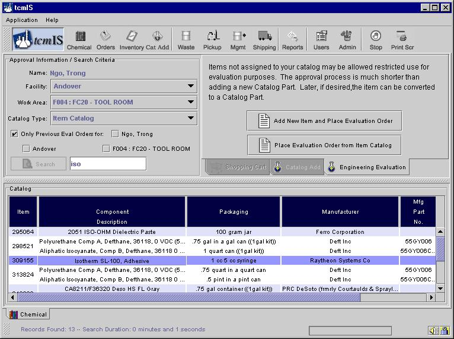
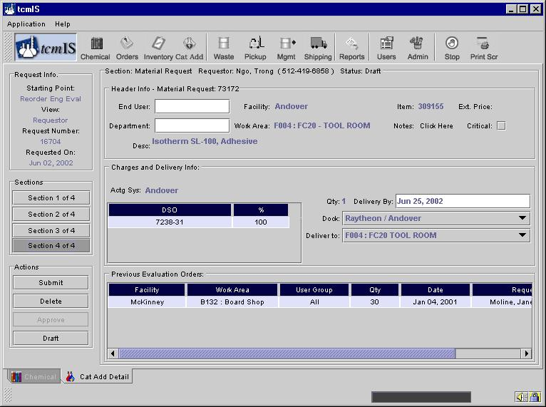

Engineering Eval
Items not assigned to your catalog may be allowed restricted use for evaluation purposes. The approval process is similar but much shorter than adding a new Catalog Part. Later, if desired, the item can be converted to a Catalog Part. To begin the process from the Item Catalog select the "Engineering Evaluation" tab and select an item to order for evaluation or, if your item is not defined in the Item Catalog, add a new Item and place your order. This process is shown below.

Within the new engineering evaluation process a section 4 is added to the usual three section from New Catalog Addition. This section allows you to place your order directly from within the engineering evaluation request form.

When you are ready click the "Submit" button which will route your request to the appropriate approvers. Upon final approval or rejection you will receive an email.